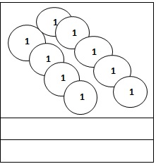

Visualizing Numbers up to 100 000 with Emphasis on Numbers 10 001 to 50 000
EXPLORE
A group of farmers donated a total of 12 364 kilograms of rice to the typhoon victims. Can you imagine how big the number 12 364 is? One way you can imagine is to think of discs to represent the numbers as shown below.

Get Moving
What number is represented by these number discs? Write your answer in your notebook.
Apply Your Skills
Read the following items. Then, write your answer to each item in your notebook.
1. A cargo ship is loaded with 35 650 kilograms of rice. Draw number discs to show the given number
2. There were 24 893 children and adults who watched the football game. Draw number discs to show the given number.
3. Mary used 4 pieces of 10 000s discs, 8 pieces of 1000s discs, 7 pieces of 100s discs, and 6 pieces of 10s discs to represent a number. What number is shown by her number discs?
4. How will you show the number 40 090 using number discs?
Visualizing Numbers up to 100 000 with Emphasis on Numbers 50 001 -100 000
EXPLORE
A total of 54 675 teachers and students joined the “Save Mother Earth” Campaign. How will you show 54 675?
You can show number discs to show 54 675.
Get Moving
What number is represented by these number discs? Write your answers in your notebook.
Apply Your Skills!
Write your answer to each item in your notebook.
1. There are 68 950 tree seedlings distributed to the barangays by the Department of Environment and Natural Resources. Draw numbers discs to show the given number.
2. Mr. Ong bought some appliances worth Php 85, 675. Represent this amount using number discs.
3. Which number is 10 000 smaller than 89 999?
99 890 79 990 79 890 69 990
4. Which number is 10 000 greater than 75 650?
85 700 85 650 95 650 65 650